Zadanie 6 
Rozwiązanie</div ><div class="ZadBorder"><div class="ZestawSingRoz"><p class="NoPad">Oczywiście mianowniki muszą być niezerowe, czyli 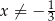 i 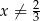. </p><p class="indent" > Przekształcamy równanie </p> <div class="math-display" > 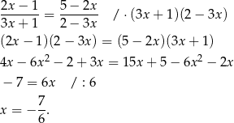</div> <p class="nopar" >  <br class="newline" /><span class="MSodp">Odpowiedź: <span class="MSodpCore ">B 
Zadanie 7
Rozwiązanie</div ><div class="ZadBorder"><div class="ZestawSingRoz"><p class="NoPad">Oprocentowanie roczne wynosi 8%, czyli kwartalne wynosi </p> <div class="math-display" > 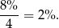</div> <p class="nopar" > Korzystamy ze wzoru na procent składany. </p> <div class="math-display" > 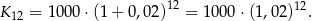</div> <p class="nopar" >  <br class="newline" /><span class="MSodp">Odpowiedź: <span class="MSodpCore ">C
Zadanie 8
Rozwiązanie</div ><div class="ZadBorder"><div class="ZestawSingRoz"><p class="NoPad">Liczymy </p> <div class="math-display" > 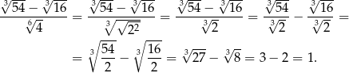</div> <p class="nopar" >  <br class="newline" /><span class="MSodp">Odpowiedź: <span class="MSodpCore ">B
Zadanie 9
Rozwiązanie</div ><div class="ZadBorder"><div class="ZestawSingRoz"><p class="NoPad">Wykres funkcji znajduje się poniżej osi  na zbiorze: 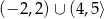.  <br class="newline" /><span class="MSodp">Odpowiedź: <span class="MSodpCore ">C
Zadanie 10 
Rozwiązanie</div ><div class="ZadBorder"><div class="ZestawSingRoz"><p class="NoPad">Wykresem podanej funkcji jest parabola o ramionach skierowanych w górę i miejscach zerowych  i 4. Wierzchołek tej paraboli znajduje się dokładnie w środku między pierwiastkami, czyli pierwsza współrzędna wierzchołka jest równa 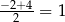. Druga współrzędna wierzchołka jest równa </p> <div class="math-display" > 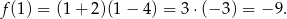</div> <p class="nopar" > Zbiorem wartości tej funkcji jest więc przedział . </p><hr class="figure" /><div class="figure" > <p class="noindent" >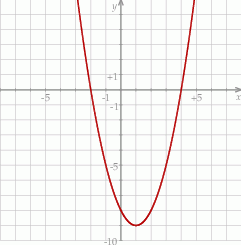 </p> </div><hr class="endfigure" /> <p class="indent" >  <br class="newline" /><span class="MSodp">Odpowiedź: <span class="MSodpCore ">A
Zadanie 11
Rozwiązanie</div ><div class="ZadBorder"><div class="ZestawSingRoz"><p class="NoPad">Jeżeli 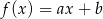 to wiemy, że </p> <div class="math-display" > 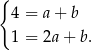</div> <p class="nopar" > Odejmując od drugiego równania pierwsze mamy 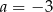. Stąd 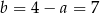 i 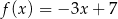. Zatem </p> <div class="math-display" > 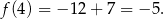</div> <p class="nopar" >  <br class="newline" /><span class="MSodp">Odpowiedź: <span class="MSodpCore ">A 
Zadanie 12
Rozwiązanie</div ><div class="ZadBorder"><div class="ZestawSingRoz"><p class="NoPad">Zapiszmy podaną funkcję w postaci kanonicznej </p> <div class="math-display" > 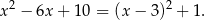</div> <p class="nopar" > Widać, że wykres ten powstaje z wykresu 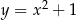 przez przesunięcie o 3 jednostki w prawo (bo wierzchołek jest w punkcie 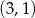). </p><hr class="figure" /><div class="figure" > <p class="noindent" >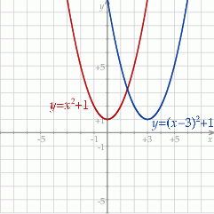 </p> </div><hr class="endfigure" /> <p class="indent" >  <br class="newline" /><span class="MSodp">Odpowiedź: <span class="MSodpCore ">A 
Zadanie 13
Rozwiązanie</div ><div class="ZadBorder"><div class="ZestawSingRoz"><p class="NoPad">Ciąg geometryczny to ciąg postaci 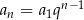. Z podanych odpowiedzi tylko ciąg 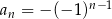 ma tę postać (z  i 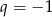).  <br class="newline" /><span class="MSodp">Odpowiedź: <span class="MSodpCore ">B
Zadanie 14 <div class="ZestawSingZadPunktyPkt">(1 pkt)</div ></div ><div class="ZadBorder"><div class="ZestawSingZadPunkty"><p class="NoPad">Ciąg  jest arytmetyczny. Wobec tego <br class="newline" /><span class="OdpKang"> A)  </span> <span class="OdpKang"> B) 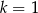 </span> <span class="OdpKang"> C)  </span> <span class="OdpKang"> D)  </span> </p></div></div><div class="ZestawSingRozTyt">Rozwiązanie</div ><div class="ZadBorder"><div class="ZestawSingRoz"> <div class="center" > <p class="noindent" ><span class="pplb8t-x-x-120">Spos</span><span class="pplb8t-x-x-120">ób I</span></p></div> <p class="noindent" >Różnica danego ciągu jest równa </p> <div class="math-display" > </div> <p class="nopar" > więc </p> <div class="math-display" > 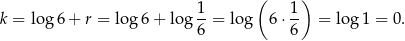</div>  <div class="center" > <p class="noindent" ><span class="pplb8t-x-x-120">Spos</span><span class="pplb8t-x-x-120">ób II</span></p></div> <p class="noindent" >Jeżeli ciąg 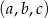 jest arytmetyczny to </p> <div class="math-display" > 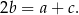</div> <p class="nopar" > W naszej sytuacji otrzymujemy </p> <div class="math-display" > 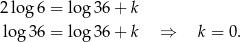</div> <p class="nopar" >  <br class="newline" /><span class="MSodp">Odpowiedź: <span class="MSodpCore ">A </span></span> </p></div><div class="CorZadBL corBL"></div><div class="CorZadBR corBR"></div></div><div class="ZestawSingZadTyt"><div class="CorNavTL corTL"></div><div class="CorNavTR corTR"></div>Zadanie 15 <div class="ZestawSingZadPunktyPkt">(1 pkt)</div ></div ><div class="ZadBorder"><div class="ZestawSingZadPunkty"><p class="NoPad">Kąt  jest kątem ostrym oraz 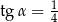. Zatem <br class="newline" /><span class="OdpKang"> A) 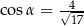 </span> <span class="OdpKang"> B) 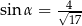 </span> <span class="OdpKang"> C) 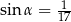 </span> <span class="OdpKang"> D) 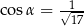 </span> </p></div></div><div class="ZestawSingRozTyt">Rozwiązanie</div ><div class="ZadBorder"><div class="ZestawSingRoz"> <div class="center" > <p class="noindent" ><span class="pplb8t-x-x-120">Spos</span><span class="pplb8t-x-x-120">ób I</span></p></div> <p class="noindent" >Z podanego tangensa wyliczymy sinus i cosinus. </p> <div class="math-display" > 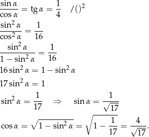</div>  <div class="center" > <p class="noindent" ><span class="pplb8t-x-x-120">Spos</span><span class="pplb8t-x-x-120">ób II</span></p></div> <p class="noindent" >Narysujmy trójkąt prostokątny, w którym 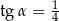. </p><hr class="figure" /><div class="figure" > 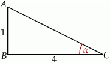 </div><hr class="endfigure" /> <p class="indent" > Łatwo teraz obliczyć sinus i cosinus. Najpierw obliczmy z twierdzenia Pitagorasa długość przeciwprostokątnej. </p> <div class="math-display" > 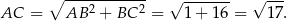</div> <p class="nopar" > Zatem </p> <div class="math-display" > 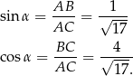</div> <p class="nopar" >  <br class="newline" /><span class="MSodp">Odpowiedź: <span class="MSodpCore ">A </span></span> </p></div><div class="CorZadBL corBL"></div><div class="CorZadBR corBR"></div></div><div class="ZestawSingZadTyt"><div class="CorNavTL corTL"></div><div class="CorNavTR corTR"></div>Zadanie 16 <div class="ZestawSingZadPunktyPkt">(1 pkt)</div ></div ><div class="ZadBorder"><div class="ZestawSingZadPunkty"><p class="NoPad">Punkty  dzielą okrąg o środku  na dziesięć równych łuków. Oblicz miarę kąta 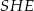 zaznaczonego na rysunku. </p><hr class="figure" /><div class="figure" > <p class="noindent" >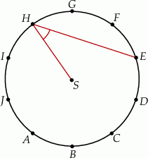 </p> </div><hr class="endfigure" /> <p class="indent" > <span class="OdpKang"> A) 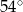 </span> <span class="OdpKang"> B) 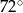 </span> <span class="OdpKang"> C)  </span> <span class="OdpKang"> D)  </span> </p></div></div><div class="ZestawSingRozTyt">Rozwiązanie</div ><div class="ZadBorder"><div class="ZestawSingRoz"><p class="NoPad">Dorysujmy odcinek 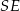. </p><hr class="figure" /><div class="figure" > <p class="noindent" >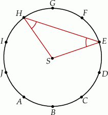 </p> </div><hr class="endfigure" /> <p class="indent" > Zauważmy, że trójkąt 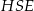 jest równoramienny i kąt 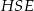 jest kątem środkowym opartym na łuku 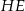 o długości równej 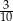 długości okręgu. Zatem </p> <div class="math-display" > 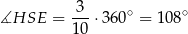</div> <p class="nopar" > oraz </p> <div class="math-display" > 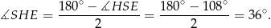</div> <p class="nopar" >  <br class="newline" /><span class="MSodp">Odpowiedź: <span class="MSodpCore ">C </span></span> </p></div><div class="CorZadBL corBL"></div><div class="CorZadBR corBR"></div></div><div class="ZestawSingZadTyt"><div class="CorNavTL corTL"></div><div class="CorNavTR corTR"></div>Zadanie 17 <div class="ZestawSingZadPunktyPkt">(1 pkt)</div ></div ><div class="ZadBorder"><div class="ZestawSingZadPunkty"><p class="NoPad">Dany jest trójkąt o wierzchołkach . Długość środkowej poprowadzonej z wierzchołka  jest równa<br class="newline" /><span class="OdpKang"> A)  </span> <span class="OdpKang"> B)  </span> <span class="OdpKang"> C)  </span> <span class="OdpKang"> D)  </span> </p></div></div><div class="ZestawSingRozTyt">Rozwiązanie</div ><div class="ZadBorder"><div class="ZestawSingRoz"><p class="NoPad">Zaczynamy od rysunku </p><hr class="figure" /><div class="figure" > <p class="noindent" > </p> </div><hr class="endfigure" /> <p class="noindent" >Liczymy współrzędne środka odcinka  </p> <div class="math-display" > </div> <p class="nopar" > Obliczamy długość odcinka  </p> <div class="math-display" > </div> <p class="nopar" >  <br class="newline" /><span class="MSodp">Odpowiedź: <span class="MSodpCore ">A </span></span> </p></div><div class="CorZadBL corBL"></div><div class="CorZadBR corBR"></div></div><div class="ZestawSingZadTyt"><div class="CorNavTL corTL"></div><div class="CorNavTR corTR"></div>Zadanie 18 <div class="ZestawSingZadPunktyPkt">(1 pkt)</div ></div ><div class="ZadBorder"><div class="ZestawSingZadPunkty"><p class="NoPad">Krótsza przekątna sześciokąta foremnego ma długość 8. Wówczas pole koła wpisanego w ten sześciokąt jest równe <br class="newline" /><span class="OdpKang"> A)  </span> <span class="OdpKang"> B)  </span> <span class="OdpKang"> C)  </span> <span class="OdpKang"> D)  </span> </p></div></div><div class="ZestawSingRozTyt">Rozwiązanie</div ><div class="ZadBorder"><div class="ZestawSingRoz"><p class="NoPad">Robimy szkicowy rysunek </p><hr class="figure" /><div class="figure" > <p class="noindent" > </p> </div><hr class="endfigure" /> <p class="indent" > Z rysunku widać, że długość krótszej przekątnej sześciokąta jest równa średnicy koła wpisanego w ten sześciokąt. Zatem pole tego koła jest równe </p> <div class="math-display" > </div> <p class="nopar" >  <br class="newline" /><span class="MSodp">Odpowiedź: <span class="MSodpCore ">C </span></span> </p></div><div class="CorZadBL corBL"></div><div class="CorZadBR corBR"></div></div><div class="ZestawSingZadTyt"><div class="CorNavTL corTL"></div><div class="CorNavTR corTR"></div>Zadanie 19 <div class="ZestawSingZadPunktyPkt">(1 pkt)</div ></div ><div class="ZadBorder"><div class="ZestawSingZadPunkty"><p class="NoPad">Stosunek długości trzech krawędzi prostopadłościanu o objętości 240 jest równy 2:3:5. Pole powierzchni tego prostopadłościanu jest równe:<br class="newline" /><span class="OdpKang"> A) 124 </span> <span class="OdpKang"> B) 248 </span> <span class="OdpKang"> C) 496 </span> <span class="OdpKang"> D) 62 </span> </p></div></div><div class="ZestawSingRozTyt">Rozwiązanie</div ><div class="ZadBorder"><div class="ZestawSingRoz"><p class="NoPad">Powiedzmy, że krawędzie prostopadłościanu mają długości: . </p><hr class="figure" /><div class="figure" > <p class="noindent" > </p> </div><hr class="endfigure" /> <p class="indent" > Z podanej objętości mamy </p> <div class="math-display" > </div> <p class="nopar" > Pole powierzchni prostopadłościanu jest więc równe </p> <div class="math-display" > </div> <p class="nopar" >  <br class="newline" /><span class="MSodp">Odpowiedź: <span class="MSodpCore ">B </span></span> </p></div><div class="CorZadBL corBL"></div><div class="CorZadBR corBR"></div></div><div class="ZestawSingZadTyt"><div class="CorNavTL corTL"></div><div class="CorNavTR corTR"></div>Zadanie 20 <div class="ZestawSingZadPunktyPkt">(1 pkt)</div ></div ><div class="ZadBorder"><div class="ZestawSingZadPunkty"><p class="NoPad">Z prostokąta  o polu 30 wycięto trójkąt  (tak jak na rysunku). Pole zacieniowanej figury jest równe </p><hr class="figure" /><div class="figure" > <p class="noindent" > </p> </div><hr class="endfigure" /> <p class="indent" > <span class="OdpKang"> A) 7,5 </span> <span class="OdpKang"> B) 15 </span> <span class="OdpKang"> C) 20 </span> <span class="OdpKang"> D) 25 </span> </p><p class="indent" > </p></div></div><div class="ZestawSingRozTyt">Rozwiązanie</div ><div class="ZadBorder"><div class="ZestawSingRoz"><p class="NoPad">Niech  będzie wysokością wyciętego trójkąta opuszczoną z wierzchołka . </p><hr class="figure" /><div class="figure" > <p class="noindent" > </p> </div><hr class="endfigure" /> <p class="indent" > Pole wyciętego trójkąta jest więc równe </p> <div class="math-display" > </div> <p class="nopar" > Zatem zacieniowana część ma pole równe </p> <div class="math-display" > </div> <p class="nopar" >  <br class="newline" /><span class="MSodp">Odpowiedź: <span class="MSodpCore ">B </span></span> </p></div><div class="CorZadBL corBL"></div><div class="CorZadBR corBR"></div></div><div class="ZestawSingZadTyt"><div class="CorNavTL corTL"></div><div class="CorNavTR corTR"></div>Zadanie 21 <div class="ZestawSingZadPunktyPkt">(1 pkt)</div ></div ><div class="ZadBorder"><div class="ZestawSingZadPunkty"><p class="NoPad">Objętość stożka o wysokości  i kącie rozwarcia  jest równa <br class="newline" /><span class="OdpKang"> A)  </span> <span class="OdpKang"> B)  </span> <span class="OdpKang"> C)  </span> <span class="OdpKang"> D)  </span> </p></div></div><div class="ZestawSingRozTyt">Rozwiązanie</div ><div class="ZadBorder"><div class="ZestawSingRoz"><p class="NoPad">Szkicujemy obrazek. </p><hr class="figure" /><div class="figure" > <p class="noindent" > </p> </div><hr class="endfigure" /> <p class="indent" > Z obrazka widać, że mamy do czynienia ze stożkiem, którego przekrój osiowy jest trójkątem równobocznym o wysokości  </p> <div class="center" > <p class="noindent" ><span class="pplb8t-x-x-120">Spos</span><span class="pplb8t-x-x-120">ób I</span></p></div> <p class="noindent" >Korzystając ze wzoru na wysokość w trójkącie równobocznym mamy </p> <div class="math-display" > </div> <p class="nopar" > Zatem objętość stożka jest równa </p> <div class="math-display" > </div>  <div class="center" > <p class="noindent" ><span class="pplb8t-x-x-120">Spos</span><span class="pplb8t-x-x-120">ób II</span></p></div> <p class="noindent" >Obliczamy promień podstawy stożka </p> <div class="math-display" > </div> <p class="nopar" > Zatem objętość stożka jest równa </p> <div class="math-display" > </div> <p class="nopar" >  <br class="newline" /><span class="MSodp">Odpowiedź: <span class="MSodpCore ">D </span></span> </p></div><div class="CorZadBL corBL"></div><div class="CorZadBR corBR"></div></div><div class="ZestawSingZadTyt"><div class="CorNavTL corTL"></div><div class="CorNavTR corTR"></div>Zadanie 22 <div class="ZestawSingZadPunktyPkt">(1 pkt)</div ></div ><div class="ZadBorder"><div class="ZestawSingZadPunkty"><p class="NoPad">Mediana uporządkowanego niemalejąco zestawu liczb:  nie zmienia się po dopisaniu liczby 10. Wtedy <br class="newline" /><span class="OdpKang"> A)  </span> <span class="OdpKang"> B)  </span> <span class="OdpKang"> C)  </span> <span class="OdpKang"> D)  </span> </p><p class="indent" > </p></div></div><div class="ZestawSingRozTyt">Rozwiązanie</div ><div class="ZadBorder"><div class="ZestawSingRoz"><p class="NoPad">Po dopisaniu liczby 10 medianę liczmy z 7 liczb, czyli jest ona równa . Mamy zatem równanie </p> <div class="math-display" > </div> <p class="nopar" >  <br class="newline" /><span class="MSodp">Odpowiedź: <span class="MSodpCore ">B </span></span> </p></div><div class="CorZadBL corBL"></div><div class="CorZadBR corBR"></div></div><div class="ZestawSingZadTyt"><div class="CorNavTL corTL"></div><div class="CorNavTR corTR"></div>Zadanie 23 <div class="ZestawSingZadPunktyPkt">(1 pkt)</div ></div ><div class="ZadBorder"><div class="ZestawSingZadPunkty"><p class="NoPad">Liczba wszystkich krawędzi graniastosłupa jest o 12 większa od liczby wszystkich jego ścian bocznych. Stąd wynika, że podstawą tego graniastosłupa jest <br class="newline" /><span class="OdpKang"> A) czworokąt </span> <span class="OdpKang"> B) pięciokąt </span> <span class="OdpKang"> C) sześciokąt </span> <span class="OdpKang"> D) dziesięciokąt </span> </p></div></div><div class="ZestawSingRozTyt">Rozwiązanie</div ><div class="ZadBorder"><div class="ZestawSingRoz"><p class="NoPad">Jeżeli w podstawie graniastosłupa jest –kąt to graniastosłup ma  krawędzi i  ścian bocznych. </p><hr class="figure" /><div class="figure" > <p class="noindent" > </p> </div><hr class="endfigure" /> <p class="indent" > Mamy więc równanie </p> <div class="math-display" > </div> <p class="nopar" >  <br class="newline" /><span class="MSodp">Odpowiedź: <span class="MSodpCore ">C </span></span> </p></div><div class="CorZadBL corBL"></div><div class="CorZadBR corBR"></div></div><div class="ZestawSingZadTyt"><div class="CorNavTL corTL"></div><div class="CorNavTR corTR"></div>Zadanie 24 <div class="ZestawSingZadPunktyPkt">(1 pkt)</div ></div ><div class="ZadBorder"><div class="ZestawSingZadPunkty"><p class="NoPad">Każdy bok trójkąta prostokątnego o bokach 3, 4, 5 kolorujemy jednym z 6 kolorów tak, aby żadne dwa boki nie były pokolorowane tym samym kolorem. Ile jest takich pokolorowań? <br class="newline" /><span class="OdpKang"> A) 15 </span> <span class="OdpKang"> B) 120 </span> <span class="OdpKang"> C) 216 </span> <span class="OdpKang"> D) 20 </span> </p></div></div><div class="ZestawSingRozTyt">Rozwiązanie</div ><div class="ZadBorder"><div class="ZestawSingRoz"><p class="NoPad">Pierwszy bok trójkąta możemy pokolorować na 6 sposobów, drugi na 5 (bo ma mieć inny kolor niż pierwszy), a trzeci na 4 sposoby. W sumie jest więc </p> <div class="math-display" > </div> <p class="nopar" > sposobów.  <br class="newline" /><span class="MSodp">Odpowiedź: <span class="MSodpCore ">B </span></span> </p></div><div class="CorZadBL corBL"></div><div class="CorZadBR corBR"></div></div><div class="ZestawSingZadTyt"><div class="CorNavTL corTL"></div><div class="CorNavTR corTR"></div>Zadanie 25 <div class="ZestawSingZadPunktyPkt">(1 pkt)</div ></div ><div class="ZadBorder"><div class="ZestawSingZadPunkty"><p class="NoPad">Ze zbioru dzielników naturalnych liczby 8 losujemy dwa razy po jednej liczbie (otrzymane liczby mogą się powtarzać). Prawdopodobieństwo, że iloczyn wybranych liczb jest dzielnikiem liczby 4 jest równe <br class="newline" /><span class="OdpKang"> A)  </span> <span class="OdpKang"> B)  </span> <span class="OdpKang"> C)  </span> <span class="OdpKang"> D)  </span> </p></div></div><div class="ZestawSingRozTyt">Rozwiązanie</div ><div class="ZadBorder"><div class="ZestawSingRoz"><p class="NoPad">Dzielniki liczby 8 to: . Jeżeli za zdarzenia elementarne przyjmiemy pary wylosowanych liczb, to </p> <div class="math-display" > </div> <p class="nopar" > Łatwo wypisać zdarzenia sprzyjające: </p> <div class="math-display" > </div> <p class="nopar" > Prawdopodobieństwo jest więc równe </p> <div class="math-display" > </div> <p class="nopar" >  <br class="newline" /><span class="MSodp">Odpowiedź: <span class="MSodpCore ">C </span></span> </p></div><div class="CorZadBL corBL"></div><div class="CorZadBR corBR"></div></div> <div class="center" > <p class="noindent" ><span class="pplb8t-x-x-120">Zadania otwarte</span></p></div> <div class="ZestawSingZadTyt"><div class="CorNavTL corTL"></div><div class="CorNavTR corTR"></div>Zadanie 26 <div class="ZestawSingZadPunktyPkt">(2 pkt)</div ></div ><div class="ZadBorder"><div class="ZestawSingZadPunkty"><p class="NoPad">Rozwiąż nierówność . </p></div></div><div class="ZestawSingRozTyt">Rozwiązanie</div ><div class="ZadBorder"><div class="ZestawSingRoz"><p class="NoPad">Przenosimy wszystkie składniki na prawą stronę. </p> <div class="math-display" > </div> <p class="nopar" > Ponieważ współczynnik przy  jest dodatni, wykres tego trójmianu jest parabolą o ramionach skierowanych w górę. </p><hr class="figure" /><div class="figure" > <p class="noindent" > </p> </div><hr class="endfigure" /> <p class="indent" > Otrzymujemy stąd rozwiązanie nierówności .  <br class="newline" /><span class="MSodp">Odpowiedź: <span class="MSodpCore "> </span></span> </p></div><div class="CorZadBL corBL"></div><div class="CorZadBR corBR"></div></div><div class="ZestawSingZadTyt"><div class="CorNavTL corTL"></div><div class="CorNavTR corTR"></div>Zadanie 27 <div class="ZestawSingZadPunktyPkt">(2 pkt)</div ></div ><div class="ZadBorder"><div class="ZestawSingZadPunkty"><p class="NoPad">Wyznacz najmniejszą i największą wartość funkcji  w przedziale . </p></div></div><div class="ZestawSingRozTyt">Rozwiązanie</div ><div class="ZadBorder"><div class="ZestawSingRoz"><p class="NoPad">Widać, że wykres funkcji  jest parabolą zwróconą ramionami w dół czyli, największą wartość przyjmuje w wierzchołku. </p><hr class="figure" /><div class="figure" > <p class="noindent" > </p> </div><hr class="endfigure" /> <p class="indent" > Najpierw sprawdzamy czy pierwsza współrzędna wierzchołka należy do przedziału  </p> <div class="math-display" > </div> <p class="nopar" > Zatem wierzchołek należy do interesującego nas przedziału, więc największą wartością w tym przedziale jest </p> <div class="math-display" > </div> <p class="nopar" > Wartość najmniejszą otrzymamy w jednym z końców przedziału. W którym? – liczymy i sprawdzamy. </p> <div class="math-display" > </div> <p class="nopar" >  <br class="newline" /><span class="MSodp">Odpowiedź: <span class="MSodpCore ">,  </span></span> </p></div><div class="CorZadBL corBL"></div><div class="CorZadBR corBR"></div></div><div class="ZestawSingZadTyt"><div class="CorNavTL corTL"></div><div class="CorNavTR corTR"></div>Zadanie 28 <div class="ZestawSingZadPunktyPkt">(2 pkt)</div ></div ><div class="ZadBorder"><div class="ZestawSingZadPunkty"><p class="NoPad">Udowodnij, że jeżeli liczby  są kolejnymi wyrazami ciągu geometrycznego, to </p> <div class="math-display" > </div> <p class="nopar" > </p></div></div><div class="ZestawSingRozTyt">Rozwiązanie</div ><div class="ZadBorder"><div class="ZestawSingRoz"> <div class="center" > <p class="noindent" ><span class="pplb8t-x-x-120">Spos</span><span class="pplb8t-x-x-120">ób I</span></p></div> <p class="noindent" >Przekształcamy lewą stronę równości, którą mamy udowodnić (korzystamy ze wzoru na różnicę kwadratów). </p> <div class="math-display" > </div> <p class="nopar" > Wiemy ponadto, liczby  są kolejnymi wyrazami ciągu geometrycznego, więc . Mamy zatem </p> <div class="math-display" > </div>  <div class="center" > <p class="noindent" ><span class="pplb8t-x-x-120">Spos</span><span class="pplb8t-x-x-120">ób II</span></p></div> <p class="noindent" >Skoro liczby  są kolejnymi wyrazami ciągu geometrycznego, to  i  dla pewnego . Równość, którą mamy udowodnić przyjmuje więc postać. </p> <div class="math-display" > </div> <p class="nopar" > Aby udowodnić tę równość przekształcamy lewą stronę (korzystamy ze wzoru na różnicę kwadratów). </p> <div class="math-display" > </div> </div><div class="CorZadBL corBL"></div><div class="CorZadBR corBR"></div></div><div class="ZestawSingZadTyt"><div class="CorNavTL corTL"></div><div class="CorNavTR corTR"></div>Zadanie 29 <div class="ZestawSingZadPunktyPkt">(2 pkt)</div ></div ><div class="ZadBorder"><div class="ZestawSingZadPunkty"><p class="NoPad">Trójkąty  i  są równoramienne i prostokątne. Punkty  i  leżą na jednej prostej, a punkty  i  są środkami odcinków  i  (zobacz rysunek). Wykaż, że . </p><hr class="figure" /><div class="figure" > <p class="noindent" > </p> </div><hr class="endfigure" /> <p class="indent" > </p></div></div><div class="ZestawSingRozTyt">Rozwiązanie</div ><div class="ZadBorder"><div class="ZestawSingRoz"><p class="NoPad">Dorysujmy odcinki  i . </p><hr class="figure" /><div class="figure" > <p class="noindent" > </p> </div><hr class="endfigure" /> <div class="center" > <p class="noindent" ><span class="pplb8t-x-x-120">Spos</span><span class="pplb8t-x-x-120">ób I</span></p></div> <p class="noindent" >Zauważmy, że odcinki  i  są do siebie równoległe. Odcinek  łączy środki ramion w trapezie , więc jest równoległy do podstaw  i . Zatem . </p><p class="indent" > Podobnie, patrząc na odcinki  i , uzasadniamy, że odcinek  jest równoległy do  i . Zatem . To oznacza, że trójkąt  jest równoramiennym trójkątem prostokątnym. W szczególności . </p> <div class="center" > <p class="noindent" ><span class="pplb8t-x-x-120">Spos</span><span class="pplb8t-x-x-120">ób II</span></p></div> <p class="noindent" >Tak jak poprzednio zauważamy, że odcinki  i  łączą środki ramion w trapezach  i . Ponieważ odcinek łączący środki ramion trapezu ma długość równą średniej arytmetycznej długości podstaw, mamy </p> <div class="math-display" > </div> </div><div class="CorZadBL corBL"></div><div class="CorZadBR corBR"></div></div><div class="ZestawSingZadTyt"><div class="CorNavTL corTL"></div><div class="CorNavTR corTR"></div>Zadanie 30 <div class="ZestawSingZadPunktyPkt">(2 pkt)</div ></div ><div class="ZadBorder"><div class="ZestawSingZadPunkty"><p class="NoPad">Kąt  jest ostry i . Oblicz . </p></div></div><div class="ZestawSingRozTyt">Rozwiązanie</div ><div class="ZadBorder"><div class="ZestawSingRoz"> <div class="center" > <p class="noindent" ><span class="pplb8t-x-x-120">Spos</span><span class="pplb8t-x-x-120">ób I</span></p></div> <p class="noindent" >Ponieważ mamy obliczyć tangens, podzielmy licznik i mianownik danego ułamka przez . </p> <div class="math-display" > </div>  <div class="center" > <p class="noindent" ><span class="pplb8t-x-x-120">Spos</span><span class="pplb8t-x-x-120">ób II</span></p></div> <p class="noindent" >Przekształcamy daną równość tak, aby otrzymać . </p> <div class="math-display" > </div> <p class="nopar" >  <br class="newline" /><span class="MSodp">Odpowiedź: <span class="MSodpCore "> </span></span> </p></div><div class="CorZadBL corBL"></div><div class="CorZadBR corBR"></div></div><div class="ZestawSingZadTyt"><div class="CorNavTL corTL"></div><div class="CorNavTR corTR"></div>Zadanie 31 <div class="ZestawSingZadPunktyPkt">(2 pkt)</div ></div ><div class="ZadBorder"><div class="ZestawSingZadPunkty"><p class="NoPad">W 8 pudełkach umieszczamy 5 ponumerowanych kulek tak, aby w żadnym pudełku nie było więcej niż jednej kulki. Na ile sposobów możemy to zrobić? </p></div></div><div class="ZestawSingRozTyt">Rozwiązanie</div ><div class="ZadBorder"><div class="ZestawSingRoz"><p class="NoPad">Każdej kulce musimy przyporządkować unikalny numer pudełka. Można to zrobić na </p> <div class="math-display" > </div> <p class="nopar" > sposobów (pierwsza trafia do dowolnego z pudełek, druga nie może znaleźć się w tym co pierwsza, trzecia musi być w innym niż dwie pierwsze itd.).  <br class="newline" /><span class="MSodp">Odpowiedź: <span class="MSodpCore ">6720 </span></span> </p></div><div class="CorZadBL corBL"></div><div class="CorZadBR corBR"></div></div><div class="ZestawSingZadTyt"><div class="CorNavTL corTL"></div><div class="CorNavTR corTR"></div>Zadanie 32 <div class="ZestawSingZadPunktyPkt">(4 pkt)</div ></div ><div class="ZadBorder"><div class="ZestawSingZadPunkty"><p class="NoPad">Objętość ostrosłupa prawidłowego trójkątnego  (tak jak na rysunku) jest równa 243, a promień okręgu wpisanego w podstawę  tego ostrosłupa jest równy 3. Oblicz tangens kąta między wysokością tego ostrosłupa, a jego krawędzią boczną. </p><hr class="figure" /><div class="figure" > <p class="noindent" > </p> </div><hr class="endfigure" /> <p class="indent" > </p></div></div><div class="ZestawSingRozTyt">Rozwiązanie</div ><div class="ZadBorder"><div class="ZestawSingRoz"><p class="NoPad">Dorysujmy wysokość ściany bocznej. </p><hr class="figure" /><div class="figure" > <p class="noindent" > </p> </div><hr class="endfigure" /> <p class="indent" > Promień  okręgu wpisanego w podstawę to  wysokości trójkąta w podstawie, więc jeżeli przez  oznaczymy długość krawędzi podstawy to mamy równanie </p> <div class="math-display" > </div> <p class="nopar" > Możemy teraz wykorzystać informację o objętości ostrosłupa do obliczenia długości jego wysokości </p> <div class="math-display" > </div> <p class="nopar" > Pozostało teraz obliczyć żądany tangens. </p> <div class="math-display" > </div> <p class="nopar" >  <br class="newline" /><span class="MSodp">Odpowiedź: <span class="MSodpCore "> </span></span> </p></div><div class="CorZadBL corBL"></div><div class="CorZadBR corBR"></div></div><div class="ZestawSingZadTyt"><div class="CorNavTL corTL"></div><div class="CorNavTR corTR"></div>Zadanie 33 <div class="ZestawSingZadPunktyPkt">(4 pkt)</div ></div ><div class="ZadBorder"><div class="ZestawSingZadPunkty"><p class="NoPad">Liczby  są kolejnymi wyrazami ciągu arytmetycznego. Jeśli liczbę  zwiększymy o 1, a liczbę  zwiększymy o 3, to otrzymane liczby będą kolejnymi wyrazami ciągu geometrycznego. Wyznacz  i . </p></div></div><div class="ZestawSingRozTyt">Rozwiązanie</div ><div class="ZadBorder"><div class="ZestawSingRoz"> <div class="center" > <p class="noindent" ><span class="pplb8t-x-x-120">Spos</span><span class="pplb8t-x-x-120">ób I</span></p></div> <p class="noindent" >Wiemy, że liczby  są kolejnymi wyrazami ciągu arytmetycznego, więc  i  dla pewnego . Wiemy ponadto, że ciąg  jest ciągiem geometrycznym, więc </p> <div class="math-display" > </div> <p class="nopar" > Otrzymujemy stąd dwa ciągi:  i . </p> <div class="center" > <p class="noindent" ><span class="pplb8t-x-x-120">Spos</span><span class="pplb8t-x-x-120">ób II</span></p></div> <p class="noindent" >Wiemy, że ciąg  jest arytmetyczny, więc </p> <div class="math-display" > </div> <p class="nopar" > Wiemy ponadto, że ciąg  jest geometryczny, więc </p> <div class="math-display" > </div> <p class="nopar" > Mamy wtedy odpowiednio  i .  <br class="newline" /><span class="MSodp">Odpowiedź: <span class="MSodpCore "> lub  </span></span> </p></div><div class="CorZadBL corBL"></div><div class="CorZadBR corBR"></div></div><div class="ZestawSingZadTyt"><div class="CorNavTL corTL"></div><div class="CorNavTR corTR"></div>Zadanie 34 <div class="ZestawSingZadPunktyPkt">(5 pkt)</div ></div ><div class="ZadBorder"><div class="ZestawSingZadPunkty"><p class="NoPad">Punkty  są kolejnymi wierzchołkami trapezu . Oblicz pole tego trapezu. </p></div></div><div class="ZestawSingRozTyt">Rozwiązanie</div ><div class="ZadBorder"><div class="ZestawSingRoz"><p class="NoPad">Rozpoczynamy oczywiście od szkicowego rysunku. </p><hr class="figure" /><div class="figure" > <p class="noindent" > </p> </div><hr class="endfigure" /> <p class="indent" > Aby obliczyć pole trapezu musimy znać długości jego podstaw oraz długość wysokości. Długości podstaw łatwo obliczyć. </p> <div class="math-display" > </div> <p class="nopar" > Napiszmy teraz równanie prostej . Szukamy prostej w postaci . Podstawiamy współrzędne punktów  i . </p> <div class="math-display" > </div> <p class="nopar" > Odejmujemy od drugiego równania pierwsze i mamy , czyli . Stąd  i prosta  ma równanie: . </p><p class="indent" > Dalszą część rozwiązania poprowadzimy na dwa sposoby. </p> <div class="center" > <p class="noindent" ><span class="pplb8t-x-x-120">Spos</span><span class="pplb8t-x-x-120">ób I</span></p></div> <p class="noindent" >Wysokość trapezu możemy łatwo obliczyć ze wzoru na odległość punktu  od prostej : </p> <div class="math-display" > </div> <p class="nopar" > W naszej sytuacji mamy , a prosta to: . Mamy zatem </p> <div class="math-display" > </div> <p class="nopar" > Pole trapezu jest więc równe </p> <div class="math-display" > </div>  <div class="center" > <p class="noindent" ><span class="pplb8t-x-x-120">Spos</span><span class="pplb8t-x-x-120">ób II</span></p></div> <p class="noindent" >Jeżeli ktoś nie chce korzystać ze wzoru na odległość punktu od prostej, to wysokość trapezu możemy wyznaczyć bardziej wprost, wyznaczając równanie wysokości  opuszczonej z wierzchołka  na bok . </p><p class="indent" > Prosta  jest prostopadła do prostej , więc ma równanie postaci . Współczynnik  wyznaczamy podstawiając współrzędne punktu . </p> <div class="math-display" > </div> <p class="nopar" > Szukamy teraz punku wspólnego prostych  i . </p> <div class="math-display" > </div> <p class="nopar" > Odejmując od pierwszego równania drugie (żeby skrócić ), mamy , czyli  i . Zatem  i </p> <div class="math-display" > </div> <p class="nopar" > Pole trapezu jest równe </p> <div class="math-display" > </div> <p class="nopar" >  <br class="newline" /><span class="MSodp">Odpowiedź: <span class="MSodpCore ">27 </span></span> </p></div><div class="CorZadBL corBL"></div><div class="CorZadBR corBR"></div></div> <div class="SingZadPdf" id="ZES"><a href="https://pdf.zadania.info/96776.pdf"></a><a href="https://pdf.zadania.info/79423R.pdf"></a>